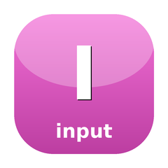

Terminal escape sequence decoder
The missing input layer for PHP TUI. EscapeDecoder consumes raw TTY bytes and emits typed Event objects — plain keys, Kitty keyboard protocol, SGR 1006 mouse, focus events, and bracketed paste. Reentrant and fuzz-friendly. Unblocks sugar-readline migration to real-TTY input (step-21).
composer require sugarcraft/candy-input:@devuse SugarCraft\Input\EscapeDecoder;
use SugarCraft\Input\Driver\StreamInputDriver;
use SugarCraft\Input\Event\KeyEvent;
use SugarCraft\Input\Event\MouseEvent;
$decoder = new EscapeDecoder();
$driver = new StreamInputDriver(STDIN);
while (true) {
$event = $driver->read();
if ($event === null) continue; // non-blocking empty or EOF
match (true) {
$event instanceof KeyEvent => handleKey($event),
$event instanceof MouseEvent => handleMouse($event),
default => handleOther($event),
};
}Bitmask flags: Shift, Ctrl, Alt, Meta, Super, Hyper, CapsLock, NumLock. Combine with bitwise OR.
?u, including key release events.| Class | Method | Description |
|---|---|---|
| EscapeDecoder | decode(string $bytes): list<Event> | Decode byte buffer, buffer partials |
| EscapeDecoder | remainder(): string | Get unconsumed bytes |
| EscapeDecoder | reset(): void | Clear partial buffer |
| StreamInputDriver | read(): ?Event | Next event from stream, or null |
| KeyEvent | key: string | Symbolic key name |
| KeyEvent | modifiers: KeyModifier | Modifier bitmask |
| KeyEvent | raw: string | Raw bytes that produced this event |
| MouseEvent | x, y: int | Column and row (1-based) |
| MouseEvent | button: int | Button index (0=left, 1=middle, 2=right) |
| MouseEvent | action: string | press | release | drag | scroll |
| FocusEvent | gained: bool | True if focus gained, false if lost |
| PasteEvent | content: string | Pasted content (max 1 MiB) |
| ResizeEvent | cols, rows: int | New terminal dimensions |
| KeyModifier | none(): self | No modifiers |
| KeyModifier | shift(): self | Shift modifier |
| KeyModifier | ctrl(): self | Ctrl modifier |
| KeyModifier | alt(): self | Alt modifier |
| KeyModifier | includes(int $flag): bool | Check if flag is set |
| KeyModifier | value(): int | Raw bitmask value |